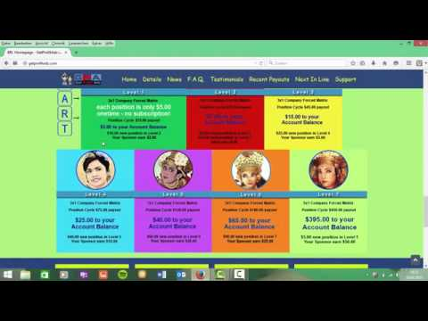

Welcome to Passiv geld verdienen
Self Made Magazine | Passiv Geld verdienen : So füllst Du nebenbei ganz einfach Deinen Geldbeutel
2020.11.28 10:39
Home Blog TV Events Rankings Download magazine Geld verdienen im Internet Passiv Geld verdienen : So füllst Du nebenbei ganz einfach Deinen Geldbeutel Posted on March 25, 2019 Flo BLOG Passiv Geld verdienen : So füllst Du nebenbei ganz einfach Deinen Geldbeutel SHARE
Das Internet ist schon ein wahrer Luxus! 😏
Es hat viele zusätzliche Arbeitsplätze geschaffen und schafft mit jedem Tag immer mehr dieser Arbeitsplätze.
Hinzu kommt, dass man mit seinen Geschäften viel größere Reichweite hat.
So kann man durch die weltweite Vernetzung sehr gut expandieren oder gar berühmt werden.
Aber wieso so weit hinaus?
Auch für den Durchschnittsmenschen hält das Internet sehr viele Chancen bereit.
Dazu zählt zum Beispiel das passiv Geld verdienen.
Früher, vor dem Internet, konnte der Großteil der Menschheit vom passiven Einkommen nur träumen!
Passives Einkommen war wohlhabenden Menschen oder Geschäftsführern vorbehalten.
Dieses hatten ihre Angestellten, die sie für sich und ihr Unternehmen arbeiten ließen.
Die Geschäftsführer machten sich nette Tage, während andere das Geld für sie scheffelten.
Doch seit dem Internet hat sich das geändert.
Nahezu jeder, sofern der Internetanschluss vorhanden ist,😅 kann im Internet passiv Geld verdienen.
Das trifft auch auf Dich zu!
Und da Du nun hier liest, möchte ich Dir ein paar gute Wege aufzeigen, um ein passives Einkommen zu erwirtschaften.
Dabei werde ich Dir keinen Masterplan nennen können, mit dem Du reich wirst.
Es geht vordergründig darum, wie Du nebenbei den Geldbeutel füllst.😉
YouTuber können passiv Geld verdienen
Angehimmelt von Jugendlichen. Klicks im hohen sechsstelligen Bereich oder sogar im Millionen-Bereich!😍
Regelmäßige Gäste auf Messen.
Einkommen durchs Hobby.
Sponsorenverträge mit guten Vergütungen.
Passiv Geld verdienen auf einfachstem Wege.
Auf wen kann das alles zutreffen?
Auf die YouTuber!
Wohlbemerkt: Es KANN auf YouTuber zutreffen.
Denn um wirklich von YouTube zu leben, muss man einiges an Arbeit investieren!
Seinen eigenen Kanal groß zu machen, verlangt einem einiges ab!
Doch es muss nicht ganz so groß sein.
Falls Du nur nebenbei ein bisschen passiv Geld verdienen möchtest, ist YouTube definitiv einen genaueren Blick wert!
Wenn Du nennenswerte Beträge erwirtschaften möchtest, ist es zunächst wichtig, dass Du Dir Deinen YouTube-Kanal aufbaust. ☝
Das funktioniert, indem Du Dir ein Thema aussuchst.
Im Idealfall ist es etwas, womit Du Dich wirklich auskennst.
Du solltest bei dem Thema/den Themen Deines Kanals den Zuschauern guten Inhalt bieten.
Denn der Inhalt ist es letztlich, nach dem sich der Erfolg Deines Kanals richtet.
Kommt der Inhalt nun korrekt, regelmäßig und mit guter Qualität auf YouTube, sind schon mal erste gute Voraussetzungen für den Aufbau eines eigenen erfolgreichen Kanals gegeben.
Ansonsten sind die richtigen Hashtags zu Deinen Videos sowie aussagekräftige Titel und Video-Beschreibungen wünschenswert.
Nutze zudem soziale Netzwerke wie Facebook und Twitter zur Vermarktung Deines Kanals.
Sei außerdem ständig im Kontakt mit Deinen Abonnenten, denn sie geben Dir Anhaltspunkte zur Verbesserung und machen Deinen Kanal bekannter. 😀
Ist der Kanal erstmal am Laufen und Du bringst regelmäßig neue Videos rein, dann kannst Du passiv Geld verdienen.
Deine Einkommensquelle sind die Klicks sowie die Videoaufrufe, die Deine Videos im Idealfall bekommen.
Dabei ist ein Richtwert, dass es pro 1.000 Aufrufe zwischen 1 und 2 € Vergütung gibt.
Hänge Dich ordentlich rein und baue mit Geduld einen funktionierenden YouTube-Kanal auf.
Dann eignet sich die Plattform zum passiv Geld verdienen!
Passiv Geld verdienen mit Büchern!
Veröffentliche doch einfach ein oder zwei gute Bücher!
Joanne K. Rowling, der Harry-Potter-Autorin, hat die Zauberlehrling-Saga genügt, um für ihr ganzes Leben ausgesorgt zu haben.
Sie ist richtig am passiv Geld verdienen!
Nun gut, ich muss zugeben: Dass Du so einen Glückstreffer landest, ist höchst unwahrscheinlich.😅
Aber: Wer nicht wagt, der nicht gewinnt! Zumal das Veröffentlichen von Büchern heutzutage ein regelrechtes Kinderspiel ist.
Amazon macht es möglich.
Wieso Du ausgerechnet Amazon nehmen solltest?
Erstens geht die Veröffentlichung über den Amazon-Store schneller, als wie wenn Du das Buch drucken lassen würdest.
Zweitens profitierst Du mehr!🤑
Mal angenommen, Du würdest Dein Buch beim Verlag drucken lassen wollen: Dann böten sich drei Probleme:
Es wäre nicht sicher, ob der Verlag das Buch akzeptieren würde.
Es wurden sogar Bücher von mehreren Verlagen abgelehnt, die im Nachhinein Meisterwerke der Literatur wurden…
Der Druck des Buches würde lange dauern.
Der Gewinn wäre wesentlich geringer als über Amazon.
Nachdem die Idee mit dem Verlag abgestempelt ist, stelle ich Dir das Veröffentlichen über Amazon vor: Zum einen verbleiben 70 % des Umsatzes bei Dir.
Das ist ein hoher Betrag.
Verlage können da nicht mal ansatzweise mithalten.
Zum anderen ist sicher, dass das Buch veröffentlicht wird.
Die Veröffentlichung ist sogar nur eine Frage weniger Minuten. 👌
Doch solltest Du Dir genau überlegen, ob Du das Veröffentlichen über Amazon alleine machen möchtest.
Neben dem Schreiben gehören nämlich auch Formatierung, Grafik und Coverdesign zu einem überzeugenden E-Book dazu.
Von daher empfiehlt es sich, dass Du ein Unternehmen mit der Gestaltung beauftragst und auch die Veröffentlichung durch das Unternehmen übernehmen lässt.
Außerdem besteht auch die Möglichkeit, das Buch vermarkten zu lassen.
Hole Dir also für ein eigenes Buch kompetente Hilfe ins Boot!
So wird das Buch professioneller und wahrscheinlicher eine herausragende Quelle zum passiv Geld verdienen.
Suche nach Nischen!
„Da hast Du aber eine Nische im Markt gefunden!“
Wenn Du das hörst, musst Du etwas sehr richtig gemacht haben.👍
Eine Nische ist eine Marktlücke; ein Produkt oder eine Sache, dessen Potential der Markt noch nicht entdeckt hat.
Bedeutet: Wenn Du eine Nische findest, dann ist die Konkurrenz gering!
Bei geringer Konkurrenz lässt sich gut Geld verdienen.
So genannte Nischenseiten eignen sich exzellent zum passiv Geld verdienen im Internet.
Dabei erstellst Du eine Internetseite für das noch nicht so stark beworbene Produkt.
Dein Ziel ist es, als einer der wenigen für das bestimmte Produkt werbenden, Aufmerksamkeit zu erregen.
Dazu brauchst Du eine gute Internet- bzw. Nischenseite. ☝
Diese Nischenseite, wenn da erstmal Besucher raufgelockt werden, sorgt dafür, dass Du passiv Geld verdienen kannst.
Bei der Erstellung der Nischenseite hast Du die dankbare Chance, ein Unternehmen mit der Erstellung und der Pflege der Nischenseite zu beauftragen. 😁
Es empfiehlt sich wirklich, den Aufbau und die ständige Aktualisierung der Nischenseite durch ein Unternehmen machen zu lassen.
Dieses Unternehmen sorgt nämlich für möglichst hohe Google-Rankings und eine ansprechende Gestaltung der Nischenseite.
Je höher die Rankings bei Google und je ansprechender die Seite, desto höher die Besucherströme und somit die Umsätze für Dich.
Doch wie machst Du die Umsätze?
Dazu musst Du das Nischenprodukt auf Deiner Seite zum Verkauf anbieten oder Verlinkungen und Werbung zum Anbieter auf Deiner Nischenseite schalten.
Auf der Nischenseite kannst Du einerseits durch eigene Produkte verdienen.
Andererseits, was öfter der Fall ist, wirbst Du für ein Nischenprodukt, welches jemand anderes anbietet.
Klickt nun jemand auf Links oder Werbungen auf Deiner Nischenseite und schließt eventuell sogar Käufe beim Anbieter ab, erhältst Du eine Umsatz-Beteiligung.
Diese variiert, kann aber bis zu 10 % betragen.
Ist eine Nischenseite erstmal am Laufen, musst Du zum passiv Geld verdienen keinen großen Beitrag leisten.
Werbungen oder Affiliate Marketing auf eigener Webseite
Passiv Geld verdienen kommt auch hier nicht von alleine: Bevor Du mit Werbebannern oder Affiliate Marketing ein Nebeneinkommen erwirtschaftest, musst Du erstmal eine funktionierende Webseite oder einen starken Social-Media-Account aufbauen.
Diese Vorarbeit ist notwendig, damit Du möglichst viel Traffic , also Besucher, auf Deiner Plattform hast, die die Werbungen anklicken.🙌
Das Prinzip ähnelt aber dem einer Nischenseite: Du wirbst auf verschiedene Arten für ein Produkt oder Unternehmen auf Deiner Webseite.
Durch Klicks und Käufe der Leser im Shop des Anbieters fließen Dir Provisionen zu.
Hältst Du Deine Webseite aktuell und interessant, hast Du auch hier eine selbst laufende Ertragsquelle zum sehr effektiven passiv Geld verdienen!
Doch damit die Werbung wirklich Früchte trägt, solltest Du sie sparsam, aber dafür an guten Stellen verwenden. 🧐
Das versteht sich aber von selbst.
Stelle Dir vor, Du kommst auf eine Internetseite und Dir schießen plötzlich zehn Banner entgegen… Darauf hat doch kein Mensch Bock! 😤
Also setze die Werbung lieber an den richtigen Stellen wirkungsvoll ein.
Im Idealfall entscheidest Du Dich für Produkte, die im Zusammenhang mit Deinem Unternehmen stehen.
Damit förderst Du Deine Seite und erzielst viel eher Verkäufe, wodurch Du besser passiv Geld verdienen kannst.
Sparsam solltest Du nicht nur mit Bannerwerbung sein, sondern auch mit Affiliate Marketing.
Beim Affiliate Marketing bist Du der Affiliate-Partner eines Anbieters wie Amazon.
Du verlinkst Produkte, für die Du eine Vereinbarung mit Amazon hast, in Deinem Webseiten-Text.
Wieder selbes Spiel: Durch Klick und Kauf eines Besuchers klingeln die Kassen bei Dir!
Passe nur auf, dass Du nicht zu viel verlinkst, sonst ist der Text überfüllt und das Marketing wirkt auf Seiten-Besucher aufdringlich.
Das schädigt den Ruf Deiner Seite.
Setze Banner oder Verlinkungen in Webseiten, Social-Media-Accounts oder Blogs wohl dosiert und an richtigen Stellen ein.☝
Dann ist passiv Geld verdienen sehr leicht möglich.
Stockfotografie für passiv Geld verdienen?
Schon mal von Stockfotografie gehört?🤔
Nein?
Nicht schlimm!
Ich stelle Dir jetzt diese Möglichkeit des passiv Geld verdienen vor.😉
Mit Fotos im Internet ein Nebeneinkommen zu verdienen, ist in der Tat bei viele nicht gerade das, was an oberster Stelle steht.
Das liegt aber nicht daran, dass Fotos so wenig lohnend sind.
Es geht schlicht und einfach in der Fülle der Online-Nebenjobs unter.
Wie funktioniert das nun?
Vielleicht machst Du gerne Fotos.
Vielleicht hast Du sogar eine sehr gute Kamera zufällig rumliegen.
Wieso nicht daraus Geld machen?
Selbst, wenn Du keine allzu gute Kamera hast, sind heutzutage die Kameras bei Smartphones völlig ausreichend, um mit Fotos passiv Geld verdienen zu können.
Deine simple Aufgabe ist es, Fotos zu machen.
Das können Fotos von allem möglichen sein.
Anschließend veröffentlichst Du Deine Fotos zum Verkauf im Internet.
Ein paar Hinweise zwischendurch: Du musst aufpassen, dass Du bei Deinen Fotos keine Rechte verletzt!
🤨 Viel zitiert in diesem Zusammenhang sind Markenrechte: Es dürfen keine Logos von Unternehmen oder Vereinen auf den Fotos ohne Zustimmung zu sehen sein.
Außerdem musst Du auf Personenrechte Acht geben: Keine Person, die es vorher nicht genehmigt hat, darf auf Deinen Fotos sichtbar sein.
Ansonsten solltest Du bei den Fotos darauf achten, dass sie sich möglichst gut von der Konkurrenz abheben.
Verzichte also auf großes Drumherum und fokussiere Dich auf das Wesentliche:☝ Die einzelnen Motive der Fotos sollten gut rüberkommen, dann werden Deine Fotos mit höherer Wahrscheinlichkeit gekauft.
Sicher ist passiv Geld verdienen mit Fotos eine interessante Option.
Nicht für jeden, aber vielleicht für Dich.
Zu den Verdienstchancen: Es gibt sehr spezielle Fotos, die sogar für ein paar Hundert Euro gekauft werden.
Viel eher solltest Du aber mit ein paar Cent pro Foto rechnen.
Somit solltest Du viele Fotos schießen, damit Du im Anschluss vernünftig verdienst.
Passiv Geld verdienen kommt nicht von alleine
Oftmals bezeichnen Leute passives Einkommen als Geld ohne Arbeit.
So einfach ist das aber nicht, wie ich Dir heute gezeigt habe.
Ich hoffe, Du bist nicht allzu enttäuscht, aber: Zumindest etwas Vorarbeit ist notwendig, wenn du passiv Geld verdienen möchtest.
Außerdem musst Du zwischendurch immer wieder ein Auge auf Deine Projekte werfen, damit sie auch nach wie vor für Geldströme sorgen. 🧐
Doch damit bist Du nicht alleine.
Selbst der Geschäftsführer eines Unternehmens, für das die Angestellten arbeiten, musste erstmal sein Unternehmen aufbauen.
Und auch er kann sich nicht komplett zurückziehen aus dem Geschäft.
Zwischendurch muss er immer wieder kontrollieren, ob auch alle Arbeitsabläufe im Unternehmen optimal ablaufen.
Ohne sein wachendes Auge lassen die Angestellten irgendwann die Arbeit schleifen und die Umsätze sinken.😕
Also: Geld ohne Arbeit oder wirklich komplett passiv Geld verdienen gibt es nicht!
Das bedeutet für Dich im Umkehrschluss, dass Du erstmal bereit sein musst, Dir ein Projekt aufzubauen.
Wenn Du diese Bereitschaft hast,👍 kannst Du auch vom passiven Einkommen träumen.
Dieser Aufbau ist mit Mühen verbunden, aber er wird sich lohnen.
Versprochen…
Hast Du nun Deinen YouTube-Kanal oder Deine Nischenseite aufgebaut oder aber ein Buch veröffentlicht, gilt es, ständig dranzubleiben und alles aktuell zu halten.
Beim YouTube-Kanal und bei der Nischenseite sind regelmäßige neue Inhalte erforderlich.
Falls die Verkaufszahlen für Dein Buch sinken, solltest Du mit einem neuen Marketing-Konzept nachziehen.☝
Letztlich kannst Du im Internet sehr gut passiv Geld verdienen, da es etliche Möglichkeiten gibt.
Doch eine gewisse Grundmenge an Fleiß musst Du mitbringen, damit Deine Idee anläuft und auch bestehen bleibt.
Ich hoffe, ich konnte Dir mit meinen Tipps helfen.
Falls Du Dir unsicher bist, welche meiner Ideen Du nun ausprobieren sollst, empfehle ich Dir immer klein und mit geringer Investition anzufangen: YouTube-Kanal, Fotos oder Werbung auf eigenen Webseiten.
Geld verdienen im Internet POSTED BY FloRELATED ARTICLES
Geld verdienen im Internet Google Werbung Online Business Online Marketing Maßgeschneiderte Online-Werbung schalten: So finden Sie das perfekte Format für Ihr Unternehmen/Produkt Posted on March 29, 2019 Geld verdienen im Internet Nicht nur für Digitalnomaden: Arbeiten von zuhause aus Posted on March 27, 2019 Geld verdienen im Internet Online Marketing Digital Marketing Manager: Alltag eines Digital Marketing Managers Posted on March 09, 2019 Geld verdienen im Internet So bleibt Deine Heimarbeit seriös Posted on March 08, 2019 Allgemein Geld verdienen im Internet Online Marketing Online Verkaufen Ebook verkaufen und damit online Geld verdienen Posted on May 12, 2018 Allgemein Digitale Infoprodukte Geld verdienen im Internet Infoprodukt erstellen und automatisiert online verkaufen Posted on February 02, 2018 Geld verdienen im Internet Online Marketing Die 4 Hauptnischen zum Geld verdienen im Internet Posted on February 28, 2017leave a reply
Your e-mail address will not be published. Required fields are marked *Antworten abbrechen
Recent ARTICLES
Erfolgreicher Werbetext: Einfache und effektive Beispiele Posted on April 07, 2019 Traumberuf Online Marketer – Willst Du es wirklich? Posted on April 06, 2019 So baust Du Dir einen kostenlosen Blog auf! Posted on April 05, 2019 FOLLOW US ON
CATEGORIES
Affiliate Marketing Digitale Infoprodukte Geld verdienen im Internet Online Business Online Marketing Online Verkaufen Social Media Marketing BLOG Passiv Geld verdienen : So füllst Du nebenbei ganz einfach Deinen Geldbeutel SHARE 3 Discover the world of Self-Made Businesses Sed ut perspiciatis unde omnis iste natus error sit voluptatem accusantium doloremque laudantium DOWNLOAD THE MAGAZINE test more LEGAL IMPRESSUM Dialog schließenSitzung abgelaufen
Bitte melde dich erneut an. Die Anmelde-Seite wird sich in einem neuen Tab öffnen. Nach dem Anmelden kannst du das Tab schließen und zu dieser Seite zurückkehren.
